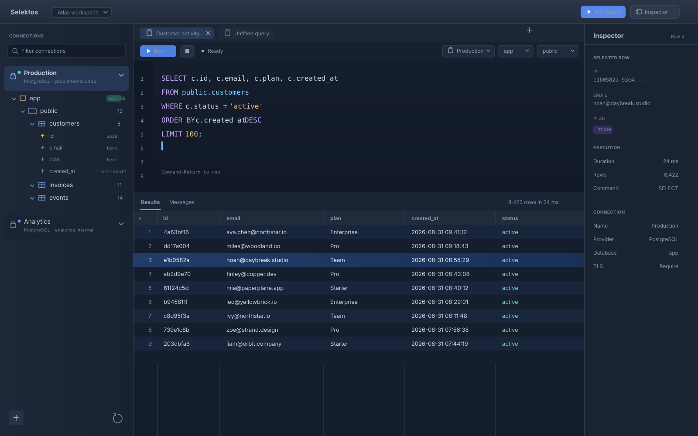
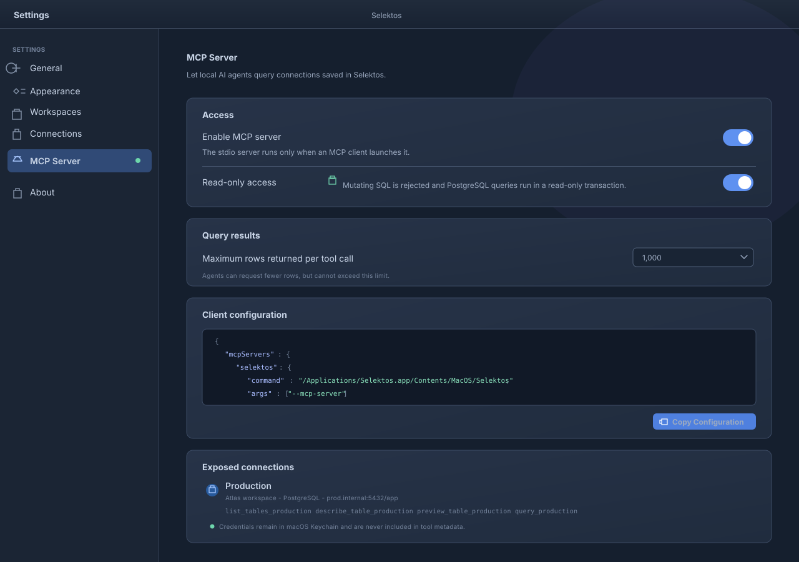

01
See the shape of your database.
Browse connections, databases, schemas, tables, and columns in a live sidebar. Double-click a table to run a bounded preview immediately.
Native macOS SQL workspace
Selektos brings PostgreSQL, Cloudflare D1, and local AI workflows into one focused, native desktop workspace.

A calmer way to inspect data
Move from connection to record without leaving the flow of your investigation.
01
Browse connections, databases, schemas, tables, and columns in a live sidebar. Double-click a table to run a bounded preview immediately.
02
Each query can stay focused on its connection, database, and schema. Completion follows the metadata you are actually working with.
03
Results adapt to any shape, retain useful execution metadata, and reveal a selected row in the inspector without disrupting the grid.
Designed for the desktop

Model Context Protocol
Selektos includes a local stdio MCP server. Give an approved local agent the context it needs to explore saved connections while keeping control in your hands.
{
"mcpServers": {
"selektos": {
"command": "/Applications/Selektos.app/Contents/MacOS/Selektos",
"args": ["--mcp-server"]
}
}
}Local-first boundaries
Connection passwords are stored in macOS Keychain. The optional MCP server runs locally over stdio, and its read-only mode validates SQL and uses read-only PostgreSQL transactions.
Start exploring
Selektos is an open-source native macOS app. Clone the repository, open it in Xcode, or run it with Swift Package Manager.
$ git clone https://github.com/defrimhasani/selektos.git
$ cd selektos
$ swift run Selektos
Selektos is ready.